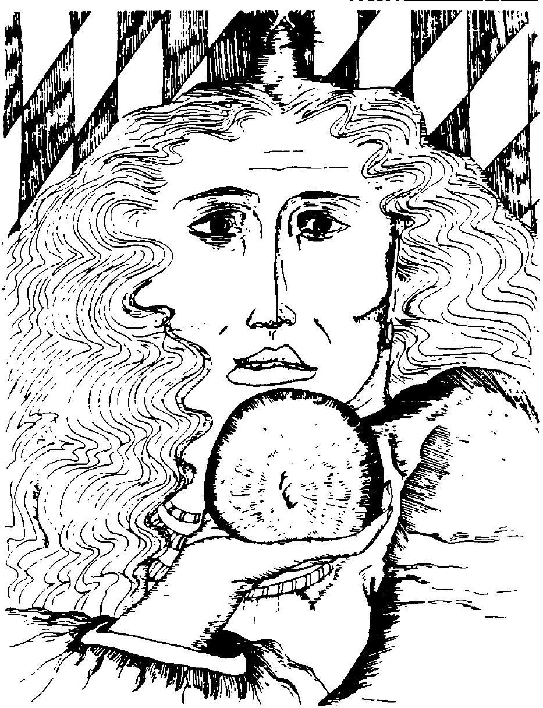

Have you ever had an incredibly vivid dream in which you had an accident, witnessed a robbery, learned about a loved one's fatal illness or missed a flight? In the scenario from one of my alarming "dreams come true," I awoke with my heart beating rapidly, heavy beads of perspiration cascading down my face; even catching my breath was difficult. I looked around my bedroom for some trace of reality, something to tell me I was safely at home and not frantically running to catch a connecting flight at the airport. In my dream, I had lost my luggage and missed my flight.
Though I dismissed this dream as a mere reflection of my fear of flying, I was in for quite a surprise the following day. This nightmare became reality when I missed a connecting flight because the plane was three hours late. I had to rush to another airline, catching a flight with a minute and a half to spare. As in the dream, my luggage was lost.
After ignoring many warnings about accidents and robberies that came true, I finally began to honor my precognitive dreams as the best inside source of information I could find. Looking back at the flight, I realize that my intuitive ability was sending me a warning about the delayed flight.
Intuition is a clear knowing. How or why we know is unclear. The simple truth is that suddenly we know and have renewed confidence in making a vital decision by ourselves. Receptivity to the inner mind is necessary to open the intuitive gateway. While the outer mind responds to the physical world through the five senses, the inner mind can perceive what happens in the outer world and register the results directly on itself. The inner mind provides an extended awareness of outside events so you can know, for example, how people will respond to situations that have not yet occurred and have warnings about potentially precarious situations.
Our intuitions revealed in the precognitive dreams go forward to provide glimpses of future events. These premonitory dreams are characterized by their crystal clear quality. In fact, upon awakening it is often difficult to tell the difference between the dream and reality.
In his book, The Edge of Tomorrow (1982), Alan Vaughan describes the activity of the dream tiger, who is ever alert to warn us about impending danger. He also describes the procedure for programming your dream tiger to prepare you for any of these potentially menacing situations. Intuitive information can be revealed in response to this deliberate or active programming.
Unfortunately, many of our precognitive dreams are quite passive or spontaneous and unprogrammed. Called premonitions, we read about instances in journals where warnings involved death (Drown, 1987), accidents (Emery, 1984, Crowley, 1986), danger (Rhine, 1969), disaster (Walters, 1987) and even assassination plots (Vaughan, 1982).
John Crowley (1986) suggests we look at the writer of our precognitive dreams to decipher the larger purpose of the message. I ignored the angel of death preparing me for the transition of my mother five months prior to the sudden event. After this shattering awareness I felt committed to help attune others to these powerful spontaneous precognitive dreams. This research addresses the spontaneous component in our precognitive dreams such as my "seeing" a friend having an accident or, in a more positive vein, dreaming of meeting a soul mate.
In contrast, I am not focusing on intuitive information resulting from more active processes such as programming, for example, a compelling introduction to this paper.
Precognitive dreams were studied at the dream laboratory established in 1962 at the Maimonides Medical Center in Brooklyn. Research in this area actively proceeded in 1969 with Malcolm Bessent's arrival from England. The studies showed that Bessent was able to foresee randomly created events of the next day more than 60 percent of the time. Alan Vaughan, one of the original Maimonides researchers points out that a variety of people with and without psychic ability participated in the Maimonides studies over the years. Out of 148 such attempts, 111 or 75 percent, were successful in activating their psychic ability in dreams (Vaughan, 1982).
From these results and my own observations of students in my psi and dream classes, I knew that psi dreams were more widespread than acknowledged. I enjoyed reading about Patricia Garfield's account with precognitive dreams as cited in Alan Vaughan's book, The Edge of Tomorrow (1982). This well know exponent of dreams became intrigued with precognitive dreams and discussed the area with Vaughan. She finally had her first major precognitive dream weeks later.
I recently heard another well known dream expert tell the audience of a TV talk show that "psychic dreams were rare." I was also shocked to read about a woman in Northern California placed in jail after precognitive dreams led to the discovery of the crime site. Baffled officials couldn't understand how she was privy to such inside information.
My recent dream experiences coupled with the desire to teach people about fully using their intuitive abilities, led to this exploratory research. My aims were as follows:
Show the respondents they can have dreams that provide glimpses of future events.
Respondents can learn to distinguish these precognitive dreams from other nocturnal reveries.
Appropriate techniques can be used to unravel this symbolism.
Optimal time periods can be identified for precognitive dream attunement.
METHODOLOGY
My pool of ever-ready participants in any psi research comes initially from the students attending the courses I teach in parapsychology and reincarnation. Two months after my Mom passed, I was working through my grief and was amazed to see that three dreams entered in my dream diary on July 22, 23 and 27 literally mirrored the events preceding and following her sudden passing on November 28, 1987. Penetrating through the symbolic layers, I was overwhelmed to realize that such a major event had been presented to me four months before. I might add that my Mom was in excellent health, so I had no reason to suspect her sojourn on earth would be so limited.
Space prohibits me from detailing those three dreams with their interpretations at this point, but of interest is the commitment I made to help myself and others understand the machinations of the precognitive dream. I invited any of my current 66 students and their friends for a dream meeting to see if they wanted to understand their intuitive dreams. Since I am known primarily for giving workshops and teaching classes in intuitive development, I preferred to use the term intuitive, instead of precognitive.
Of the many expressing an interest, a loyal eight committed themselves to dream explorations once a week during our meetings. In subsequent weeks, this number was pared down even further to the faithful four eagerly anticipating our dream meetings. During the month of February, participants met once a week for a two hour session to receive further clarification concerning the weekly step-by-step instructions presented in Henry Reed's Dream Realization workbook (1984). This helped everyone become more disciplined and attuned to dream recording and interpretation. As the facilitator, I couldn't help but notice that many precognitive dreams surfaced but got lost when any of the interpretation guidelines set forth from Henry Reed's dream journal were followed. For example, Lynn was describing an encounter with Tim Conway from the Carol Burnett show. Her explanation for using him as a central character was that she liked him and Carol Burnett's brand of comedy appealed to her. I called to her attention that the day before she attended a workshop where the only male attending was named Tim. The dream occurred before she ever entertained any idea of joining that workshop. His dream comment told her about the transformation she would be experiencing shortly. In this workshop, she actually encountered aspects of herself she had never experienced previously. This realization of having a precognitive dream opened the door to many subsequent dreams. Many of the participants were relating dreams where I could intuitively sense the precognitive component. After each instance was verified, we realized that a different format was needed to address the precognitive dream. With the help of my faithful four, I formulated the following guidelines for the forthcoming two month exploratory dream study. Everyone received a three page hand-out detailing the role of the dreamer and useful interpretation tools.
DREAMER'S ROLE
Slow down outer activity as you approach bedtime. Try to avoid stimulants such as coffee, tea with caffeine or alcohol. Meditation, relaxing music or a soothing hot bath is fine.
Keep a notebook and pencil by your bed. Use a notebook solely for dream recording that I can eventually collect.
Starting on April 1, record all dreams for two months. The first month, record all memories no matter how brief or long. The second month, I will alert you to specific periods, when you might be more receptive to your dreams.
Program yourself before sleep by saying, "Dear Higher (or Inner) Mind, thank you for any direction you have to offer me for any future event. Can you send me a signal for a precognitive dream so I will know that this dream represents an occurrence that can go forward in time."
Write the dream down immediately. If you have a mere fragment, flash or one liner, record that too. Every bit of information is important.
When you awake, lie still until you recall the dream. If you are having difficulty recalling, be still until you can "pull up a thread" that will help you retrieve the complete dream.
Before you go to sleep, date your dreambook for the following day. If the dream was very clear and lucid, note that too. Also note if you were unusually tired, drained or emotional during the 24 hour period preceding the dream. Did the dream come in the middle of the night or just before waking? Make all notations.
Write your dream on one page and the analysis on the following page.
If you are having difficulty recalling your dreams, say before falling asleep, "I will sleep soundly and awake feeling refreshed, revitalized and remembering my dreams."
Participants were asked to attend at least one of the dream meetings so I could explain how to work with interpreting symbols. These interpretive guidelines will be presented when I discuss the initial findings on interpretation. Everyone was asked to be alert to any particular symbol that would characterize the precognitive dream. Interestingly, one gal received a "cake" for precognitive dreams. She of course is validating my feeling that interpreting precognitive-intuitive dreams is simply a "piece of cake."
Since I would eventually be correlating the time for having a precognitive dream with astrological indicators in the birth chart (or horoscope), I asked everyone participating to give me their birth data (date, time and place).
People started and stopped for various reasons. I finally had 20 participants sharing their dreams and attending at least one interpretation session. All but four of the participants were female. Ages varied from 16 to 53. Occupations varied, such as one gentleman heading the international division at Amway (and becoming so intrigued with the dream process that his dream journal followed him to China and Japan), a dental hygienist, business consultant, nurse, homemaker, personnel director, down to the youngest man who was a high school student (very interested in the dream process).
It is also of interest to note that the subjects were at different levels of dream expertise. While some had kept journals and were acknowledged dreamers, others had difficulty recalling their dreams and welcomed the challenge the research project presented.
Time precludes presenting all of the data via the major dreams and interpretive narratives for each subject. However, a summary and select dream samples for each aim follows.
1. Intuitive Dreams: Fact or Fiction?
From feedback presented during the meetings, everyone had at least one precognitive fragment. Opening the door for our friend via the Tim Conway episode, was akin to opening Pandora's Box. The quality and quantity of intuitive dreams was astounding. Lynn, the heavy precognitive dreamer found cats interspersed throughout her dream whenever events were coming to pass. I have always found cats to be highly intuitive so not surprisingly they attached themselves to this animal lover.
Lou, in contrast to Lynn, stated at the outset that he rarely recalled his dreams and only had one significant dream in his life. I was delighted to have him participate as a challenge to encourage dreams. One day he related a dream after a class meeting. He didn't think it was precognitive but after hearing the dream, the intuitive quality jumped out at me immediately. In the dream, Lou was down by a body of water, talking to a doctor. His late wife appeared talking about why her recent bout with cancer had occurred. Lou had this dream three days before I discussed Holistic healing in class and the client's responsibility in healing a disease he (or she) had created. I had no idea that Lou lost his wife to cancer. Talking to a doctor by a body of water was represented by me (Ph.D.) talking in an intuitive (body of water) class about cancer (represented by the appearance of his wife). After the analysis he agreed that the dream was precognitive in signaling the class content in advance of our meeting.
For some of those participating, attention to dream recording definitely expanded their awareness of any of the dreams they received. Making them aware of precognitive material was the next step. For example, the Amway executive was delighted to have recorded some 60 dreams in two months. Basically, his dreams were reruns of work matters or revolved around personality traits in need of resolution. He was quick to point out that none of the dreams were precognitive. However, after hearing the content of some of the other group members, he excitedly delved into his records to find at least one precognitive dream.
2. Precognitive Dreams Distinguished From Other Dreams
During one meeting, the members were quite articulate about the outstanding quality of their precognitive dreams. They felt that the qualities which seemed to signal the occurrence of these dreams were experiential vividness and sensual impact. Linn, for example, felt that she was not merely viewing the dream or being vaguely involved but was aware of her entire physical body with a heightened sense of reality and often an intense sense of super reality. Linn said, "My physical senses seem more fully developed and my awareness of and involvement with the dream environment is much sharper and deeper than in waking reality. I see more colors and more clearly. The light is never harsh and glaring, but soft and penetrating, enabling me to focus on many details. I can palpably feel the atmosphere on my skin and am more aware of tactile sensations."
Most felt that the precognitive dream demands to be recognized and remembered. All senses feel ignited. There is clear breathing throughout the body and a feeling of effortlessness as the dream drama unfolds.
For many years before lucid dreaming became popularized (Stephen LaBerge, 1985), I called all my precognitive dreams lucid because they were so very clear. Many of the group members felt they were participating in their precognitive dreams. It seems that the lucid dream is not necessarily precognitive but the precognitive dream is always lucid and clear. The relationship between these two types of dream still needs clarification.
3. Unraveling The Symbolism
The precognitive-intuitive dream can be presented quite literally. In fact, I used to be annoyed with people who were asking me the same questions again and again. So vivid and literal were my precognitive dreams that it took a while to learn that the "deja vu" feeling reflected my dream rather than the actual conversation. Yet, we have to recognize another category of dreams that symbolically represents the underlying issue or action. Louisa Rhine quite aptly documented instances of both types of precognitive dreams in her book ESP In Life and Lab (1969). Some researchers, however, still adhere to criteria suggesting that a dream is precognitive when describing the future event more literally than symbolically (Walters, 1987).
Many of the students learned to penetrate the symbolism to profit from the information offered in the dreams.
Though many examples can be shared, I am drawing upon the following dreams to illustrate the interpretation process. After working with the small group during February and March, I initiated the following interpretative procedures and told everyone that any or all could be used to try to gain a deeper understanding of their precognitive-intuitive dreams.
INTERPRETATION GUIDELINES
Let the meaningful symbol present itself by coming forward or literally jumping off the page.
Close your eyes and visualize this symbol. Have a meaningful dialogue to establish some understanding of why it was given to you.
Watch a scenario or play unfold before your eyes with this symbol taking a predominant role.
Use inspirational writing to engage in a written dialogue with this symbol.
Use the amplification technique to make several associations to this central symbol until the real meaning presents itself. Specifically, each time an association to the central symbol is given, you go back to form another association. For example, a flaming red cape can be associated with a magic carpet, the theater, or clothing. Finally, you realize that physical sexual overtones are associated with this symbol.
Note the Right Brain Mode of interpretation by looking at the content, a picture or symbol rather than using words extensively.
Some dream fragments: I am lying on my back on our front sidewalk with my eyes closed. Jim comes up and says something about liking my pretty mug (meaning face), 4/11. On 4/19 I am sitting on Marcia's sundeck. Her husband Jim gives me a mug of tea with hearts and the word "lover" on it. Note in this case "pretty mug" actually referred to the teacup.
Marcia left a box of things-was going to toss it but then came back. Had to clean up some drawers, 4/16. Pam had this dream days before she found out that I had brought loads of boxes from my Dad's house.
From Kathy on 3/26: The butler entered the room and presented the woman with a gift. He said, "This is from your husband because he wants to see you happy." He placed in her hands a small painted porcelain Easter egg. She thought it was a lovely gift but it wasn't Easter and she was confused." On Easter, Kathy found out that she was pregnant.
Kathy's dreams continue, 5/6: Dreamt that Larry and I were arguing. I was being stubborn about something. He was trying to make a point, but I wouldn't listen. I knew I was overreacting but couldn't stop myself. On 5/20 that argument took place.
Kathy again: On my way to catch a plane at the Atlanta airport. The airport resembled a drug store. Decided to pick up some items. Suddenly, I noticed my sweater was covered with blood. I knew I had started my period. I ran to the restroom to clean up and change my clothes. On 5/21 the dream sadly came true when in her 10th week of pregnancy Kathy started spotting and was put into the hospital for a miscarriage.
Some dreams with confusing themes were clarified when analyzed. Jane saw her boyfriend with a married woman who had a female child and realized that he was now married to his new full time job which was in an embryonic stage. His job, involving music and creativity, is of the feminine mode.
4. Precognitive Dream Attunement
This is actually the next full phase of the exploratory research. I have actually begun with several of the participants, by giving them dates I feel will be prime times for intuitive dreams. This is the time the moon passes through the fourth, eighth, ninth and twelfth houses of the horoscope as well as over the planet Neptune. Using myself as a subject, I am constantly amazed to look back at my precognitive dreams and discover intuitive dreams occurring when the moon passed through those houses (the psychic houses and the house of higher mind) or over the planet Neptune. About half the group has correlated some of their precognitive dreams with these dates and there are many points of correspondence. This, however, is just the beginning.
There are many variations to come but one must start some place. For the month of July, I will be asking dream participants to actually be more alert than usual to the dreams occurring during the select times as just described. Perhaps paying attention to unusual dreams occurring during that time, will make them more aware of the inside information presented.
The Finale
Participants generally seemed to be hooked or committed to dream recording and interpretation. One always wonders how prevalent the precognitive dream becomes. Alan Vaughan (1982) said that he could dream about the future at least 25 percent of the time "if one tries to." One participant said 98 percent of her dreams were precognitive; another cited the 75 percent figure. note that I go through periods when the majority of my dreams are precognitive. Whatever our success rate, we certainly want to successfully use our precognitive-intuitive dreams as a private theater for previewing forthcoming events.
References
Crowley, J., "Examining Some Precognitive Dreams: Do They Simply Predict or is There Something More?" Journal of Religion and Psychical Research. July, 1986, 9, 3, 175-181.
Drown, R., "Possible Precognitive Dreams of My Father's Unexpected Death." ASD. February, 1987, 4, 1, 1112.
Emery, M., "Precognitive Dreams." DNB, November/December, 1984, 3, 6, 4-5
LaBerge, S. Lucid Dreaming. Los Angeles, Tarcher, 1985.
Reed, H., Dream Realizations, Virginia Beach, 1984.
Rhine, L., ESP in Life and Lab. New York, Collier, 1969
Ullman, M., Krippner, S. with A. Vaughan. Dream Telepathy. New York, Macmillan, 1973.
Vaughan, A., The Edge of Tomorrow. New York, Coward, McCann, Geoghegan, 1982.
Walters, K., "An Ostensibly Precognitive Dream of the 1980 Sunshine Skyway Bridge Disaster." Journal of Religion and Psychical Research. April, 1987, 10, 2, 97-103.